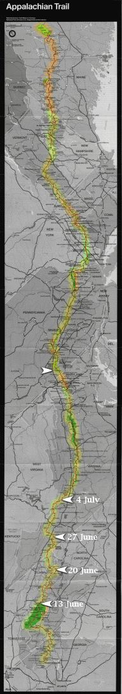

| Home | The Fox | Statistics | Maps | Churches |
StatusConfirmed - Afternoon 27 July 1998:Confirmed - the Fox left the trail near Confirmed - South Mountain, PA Confirmed - 1051.2 miles complete (48.54%) Confirmed - 1114.3 miles to go (51.46%) Confirmed - Confirmed - The Fox is resting in Chambersburg, PA
Fox In Chambersburg[28 July 1998] The Fox has indeed reached Chambersburg, and checked in to the Econo Lodge where he will stay at least four days. His foot does not hurt as badly as when he entered the emergency room last week, but is still badly swollen. |

Legend
|